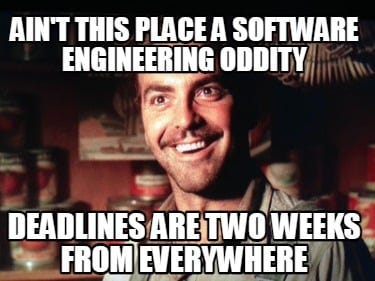
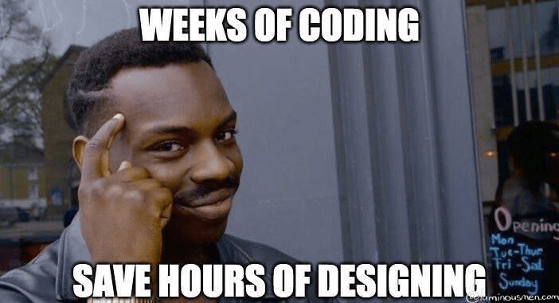

Startups and small companies often fantasize about the idea of launching a full-blown product like Youtube, Netflix at once. With years of experience in these fields, I can assure you that you can never launch a great software product on the first day. It takes multiple iterations to reach that level of satisfaction.
Like this, there are multiple mistakes that a team do while developing a new software product (especially in Startups). Following are the points to remember in order to avoid those mistakes.
Build less
Don’t race to include every feature in your product that comes in your mind. Some founders often come up with new feature ideas every other day and tell the developers to implement it which is the most common mistake.
Too many features can damage the quality of your product. Due to this user interface will get cluttered and the user experience will be complicated.
Users should flow through the interface of good software. A classic example is Instagram and WhatsApp. Build fewer features in your product. In fact, in your first launch, include only those features which are absolutely necessary for the user.
Reduce the Cost to Change
A software company can take leverage over its competitors by reducing its Cost to Change. Cost to Change is the cost that a software team bears in terms of effort, time, and money in order to implement regular modifications in the product.
Apart from keeping your code clean with periodic refactoring, the Cost to Change can be reduced in the following ways
- Don’t over-hire. Keep your team size small
- Avoid the addition of unnecessary features. More the features to deal with, the more the cost to change
- Avoid frequent changes in the team structure
- Implement coding standards & guidelines so everyone stays on the same page
Break down into smaller tasks
Generally, if you give 2 weeks to a programmer for building a feature, he/she will spend 10 days to develop 20% of the work and complete the rest in the last 4 days. Deadlines are met at the end of the day but with variable work performance.

Parkinson’s Law states that ‘work expands so as to fill the time available for its completion’.
In order to avoid such drastic variations in work performance (also known as work velocity), disintegrate your tasks into smaller tasks of not more than 1-2 days. It has two major benefits :
- After completion of every small task, a team member gets a certain sense of achievement which was lacking in long-running tasks
- The team’s velocity or work performance will get more uniform and can be tracked in a more detailed manner
Develop inside out
Always develop the core of your product first. For example, if you are building a product like WhatsApp, forget about groups, payments, wallpapers, and other settings, just develop the chatting module first. Go from macro to micro details. Don’t look for a better font, more backup servers, or extra padding from the first day.
Prioritize which features are going to be the core features of your product and develop them to a stable point. Then build the surrounding features and setting preferences.
Manage programmatic debt
Due to tight deadlines, developers often end up with low-quality high coupled yet functional code. This practice results in extra refactoring work in the future which is termed programmatic debt here.

In the world of software development, if you don’t pay the cost by putting extra time and effort into the development of a quality code then you have to pay the debt of refactoring in the future with increased Cost to Change as an interest.
Avoid accumulating such debt as it increase the cost of development in future and in some case, certain degree of inflexibility develops in the structure of the product which prevent the team from performing certain changes.
CONCLUSION
There are thousands of books for project management and software design practices that help you avoid technical hurdles but the mistakes discussed above are often undiscussed. Some of them are general concepts yet a lot of wise founders and developers fall into these traps.
“ Hundreds of software products fails not because of lack of features but due to the over baked code base with unnecessary features. Simple quality software product with few context specific feature is far better than complex software product with cluttered UI offering numerous features. “